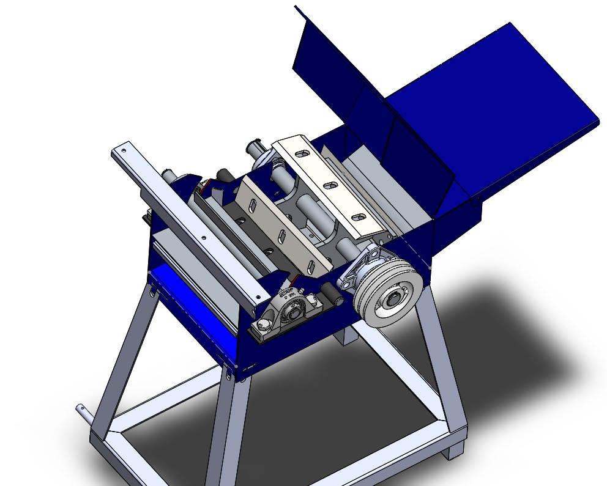
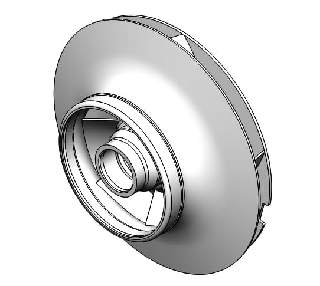
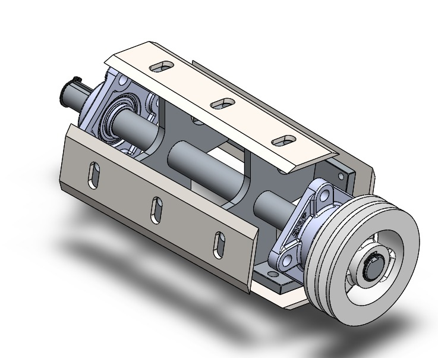
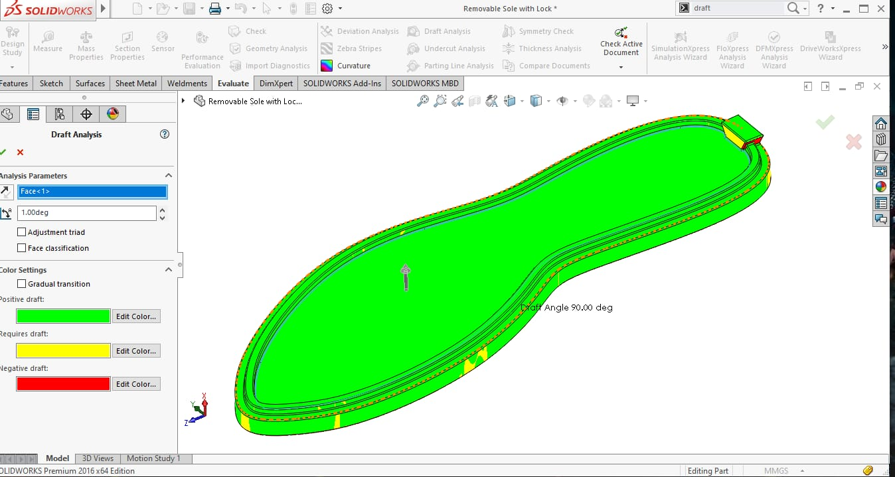
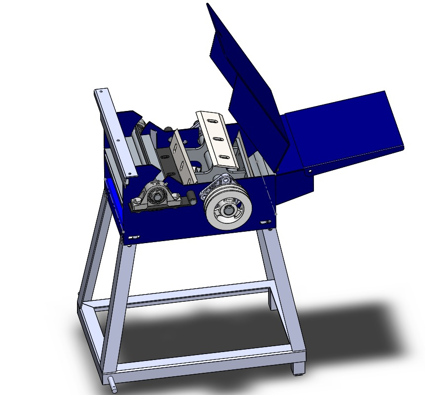

Dedicated engineer with 2 years of experience specializing in pump design and hydraulic systems. Proficient in driving product innovation from concept to validation using SolidWorks and AutoCAD.
Results-driven Mechanical Design Engineer with 2 years of R&D experience in pump design, hydraulic systems, CAD tools, SolidWorks, AutoCAD 2D drafting, GD&T, DFMEA, DFM/DFA and New Product Development (NPD). Skilled in tolerance stack-up analysis, Engineering change Management (ECM), BOM management, PLM tools (ENOVIA/SAP). Delivering reliable mechanical assemblies for waste water pump applications.
Bridging core mechanical principles with advanced digital modeling and industry validation tools.
Innovative engineering solutions focusing on efficiency, reliability, and mechanical optimization.
Reverse Engineering & Design Modification
Designed and developed a high-efficiency agriculture chaff cutting machine to achieve uniform cutting while minimizing manpower and material waste.
Design & Development
Improved mechanical seal performance in dry pit sewage pumps through innovative lubrication system design.
Design & Modification
Upgraded pump efficiency classes to meet global IE3 standards, significantly reducing energy consumption.
New Product Development
End-to-end development of structural stands for tank-mounted mixer pump configurations.
Machine Design & Fabrication
A specialized workbench incorporating a screw rod mechanism to elevate gearboxes for ergonomic servicing and maintenance.
Machine Design & Fabrication
A purely mechanical, multipurpose agricultural machine designed for seed sowing, fertilizer spraying, and grass cutting without external power sources.





My engineering growth journey through innovation, design and development.
April 2026 – Present
Sept 2025 – April 2026
June 2024 – Sept 2025
Currently based in Coimbatore, Tamil Nadu. I am open to discussing new opportunities in Mechanical Design and Hydraulic Systems.